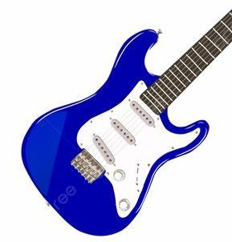
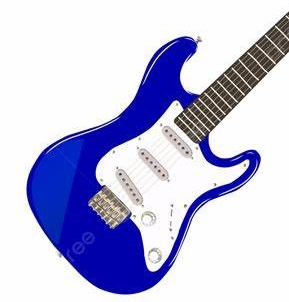

Guitarra stratocaster azul
 

La Stratocaster básica en color azul es ideal para guitarristas que buscan un instrumento confiable y versátil. Su diseño icónico y tono distintivo hacen de esta guitarra una opción popular tanto para principiantes como para músicos experimentados.
- Cuerpo de madera sólida con un acabado en azul brillante
- Pastillas single-coil para un sonido claro y versátil
- Mástil de arce con diapasón de palo de rosa, cómodo y fácil de tocar
- Puente trémolo clásico que permite efectos vibrato suaves
- Selector de 5 posiciones para una amplia gama tonal